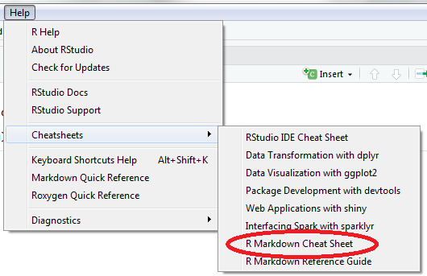
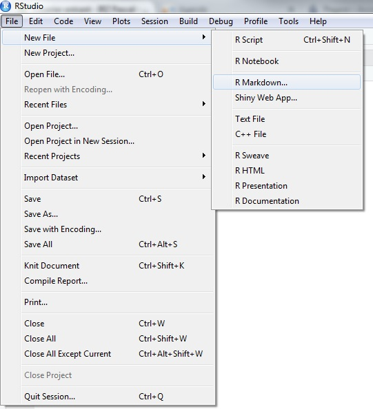
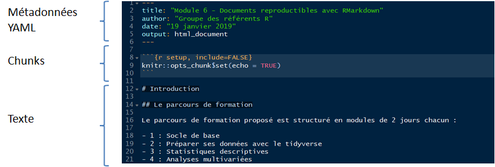

Chapitre 4 Le fichier R Markdown
La “cheatsheet” rmarkdown est uen aide précieuse pour débuter. Elle est accessible sur le site de RStudio ou directement depuis RStudio :

4.1 Créer un fichier
Pour utiliser R Markdown, il faut que le package rmarkdown soit installé :
install.packages ("rmarkdown")
library (rmarkdown)Ensuite :

Puis :

Pour commencer simple, on choisit un format de sortie HTML.
L’extension de ce type de fichier est .Rmd.
4.2 Rmarkdown dans RStudio
Un fichier R Markdown est constitué de 3 éléments principaux.

L’en-tête, au format YAML, contient des métadonnées basiques sur le document ainsi que des choix relatifs au format de sortie (PDF, HTML, DOCX, etc.). Il est délimité par deux séries de ---.
Quand on passe par le menu File \(\Rightarrow\) New file \(\Rightarrow\) R Markdown, RStudio crée l’en-tête YAML.
Pour modifier l’en-tête, attention à bien respecter l’alignement des indentations. Ce sont elles qui indiquent la hiérarchie entre les éléments texte.
L’en-tête est suivi du corps du document constitué de morceaux de code (les chunks), de texte et d’élements de mise en forme.
Dans l’IDE RStudio, le développeur dispose d’outils qui simplifient la production du fichier R Markdown (si possible images à reprendre et à traduire. Source : rmarkdown cheatsheet de 02/2016).

Le travail comprend les étapes suivantes :

4.3 Les éléments d’un fichier .Rmd
4.3.1 Les éléments texte
Les bases du langage sont très bien expliquées dans cet ouvrage :

Yihui Xie est le créateur du package rmarkdown.
4.3.1.1 Le texte simple
Le texte simple est directement interprété sans besoin de balisage.
4.3.1.2 La mise en forme à la volée
Pour les caractères en italique, entourer de deux * ou deux _ : *caractères italiques*.
Pour les caractères gras, entourer de deux ** ou deux __ : **caractères gras**.
Pour les indices et les exposants, entourer des caractères ~ou ^ respectivement.
Pour les barrés, entourer des caractères ~~.
Pour forcer le retour à la ligne, terminer par un double espace ou sauter une ligne.
4.3.1.3 Les listes
Liste à puces
+ Premier élément
+ Deuxième élément
- Sous-élément 1
- ezgtz
- aergtg
- Sous-élément 2
Rend :
- Premier élément
- Deuxième élément
- Sous-élément 1
- ezgtz
- aergtg
- Sous-élément 2
Liste numérotée
1. Premier élément
2. Deuxième élément
i) Sous-élément 1
a. ezgtz
b. aergtg
ii) Sous-élément 2
Rend :
- Premier élément
- Deuxième élément
- Sous-élément 1
- ezgtz
- aergtg
- ezgtz
- Sous-élément 2
- Sous-élément 1
4.3.1.4 Les encarts
Pratique pour les éléments à mettre en valeur comme les “à retenir”.
> encartencart
4.3.1.5 Les éléments numérotés
Contrairement à la pratique en R, le # indique les titres :
#pour le Titre1##pour le Titre2###pour le Titre3
Par défaut ils sont numérotés.
Si l’on souhaite qu’une section ne soit pas numérotée, par exemple pour les annexes ou la bibliographie, il faut faire suivre son titre de {-}. Exemple : # Annexe A {-}.
On peut insérer des balises qui ne sont pas visibles en html mais permettent des renvois à l’intérieur du document. Pour placer la balise :
# Qui a répondu à cette enquête ? {#qui-a-repondu}
Puis pour faire un lien dessus :
[Cliquer sur le lien](#qui-a-repondu)
Pour une numérotation automatique des tableaux, figures, cartes, équations, etc. il faut passer au package bookdown.
4.3.2 Les chunks
Raccourci d’insersion d’un chunk : Ctrl + Alt + I
4.3.2.1 Les options des chunks
Chaque chunk peut être paramétré. La liste complète des paramètres proposés est accessible sur : https://yihui.name/knitr/options/
eval = TRUE: Le chunk est exécuté.include = TRUE: Le code contenu dans le chunk est éxecuté sans que soient affichés ni le chunk ni son résultat. Ses résultats sont utilisables par d’autres chunks.echo = FALSE: permet de ne pas afficher les codes dans le rendu. Par contre le résultat est affiché.message = FALSE: empêche l’affichage des messages d’information générés par les codes.warning = FALSE: empêche l’affichage des messages d’alerte générés par les codes.error = FALSE: empêche l’affichage des messages d’erreur générés par les codes.fig.cap = "...": ajoute une légende aux graphiques.fig.align = "...": alignement des graphiques (choix :left,rightoucenter).fig.height = 6, fig.width = 8: dimensions de la figure (en pouces).
et plus encore : R.options, aniopts, autodep, background, cache.comments, cache.lazy, cache.rebuild, cache.vars, dev, dev.args, dpi, engine.opts, engine.path, fig.asp, fig.env, fig.ext, fig.keep, fig.lp, fig.path, fig.pos, fig.process, fig.retina, fig.scap, fig.show, fig.showtext, fig.subcap, interval, out.extra, out.height, out.width, prompt, purl, ref.label, render, size, split, tidy.opts
4.3.2.2 Les options globales des chunks
Il est possible d’appliquer des options globales qui seront appliquées chacun des chunks qui sont contenus dans le fichier, sauf spécifications contraires “locales” dans chacun des chunks.
4.3.2.3 Le cache
Si le temps d’éxecution du code est trop long, il est possible d’utiliser l’option de mise en cache de knitr afin d’améliorer les performances d’éxécution du code.
Enchaînement, paramétrage,
4.3.3 Insérer des images
La syntaxe la plus simple est la suivante :

On peut adapter les dimensions de l’image :
{ width=50% }
NB : les caractères ‘espace’ ne sont pas autorisés autour du signe égal
=, ni entre la parenthèse fermante et l’accolade ouvrante. On a){.
On peut aussi utiliser la fonction knitr::include_graphics :
```{r eval=TRUE}
knitr::include_graphics("images/couleuvre.jpg")
```Cette dernière méthode est préconisée quand le format de sortie n’est pas du html.
Des options générales qui s’appliquent aux chunks avec knitr::opts_chunk$set(). Celles-ci vont s’appliquer par défaut sur chacun des chunks sauf si d’autres options sont spécifiées.
4.3.4 Insérer des éléments en \(\LaTeX\)
\(\LaTeX\) permet de mettre en forme toutes les expressions mathématiques.
L’équation est à inclure entre deux $.
Par exemple $S=\pi \cdot \dfrec{D^2}{4}$ donne \(S=\pi \cdot \dfrac{D^2}{4}\)
On peut prévisualiser une équation en positionnant le curseur dans l’équation dans le script :